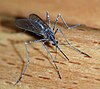

culiseta

Definition: Culiseta is a genus of mosquitoes. Most Culiseta species are cold-adapted, and only occur in warmer climates during the colder parts of the year or at higher elevations where temperatures are lower. Species found in Southern California are larger than most mosquitoes species, specifically Cs. inornata, Cs. particeps, and Cs. incidens. These species are found throughout the year in Southern California and feed on several vertebrate species, such as birds, livestock, rodents, reptiles, and humans. The larvae of most species are found bogs, marshes, ponds, streams, ditches, and rock pools, but an African species occurs in tree holes ("phytotelmata"), a common eastern Palaearctic species occurs in water wells and rock pools, and several Australian species occur under ground. Little is known about the blood-feeding habits of females. Most species feed on birds and mammals, but a few feed on reptiles. Several species attack domestic animals and occasionally humans, and some species are pollinators.Culiseta species are found throughout the world, except in South America. Two extinct species are known from the Eocene Kishenehn Formation in Montana
Source: Wikipedia
Wikipedia Page (Something wrong with this association? Let us know.)
Wikidata Page (Something wrong with this association? Let us know.)